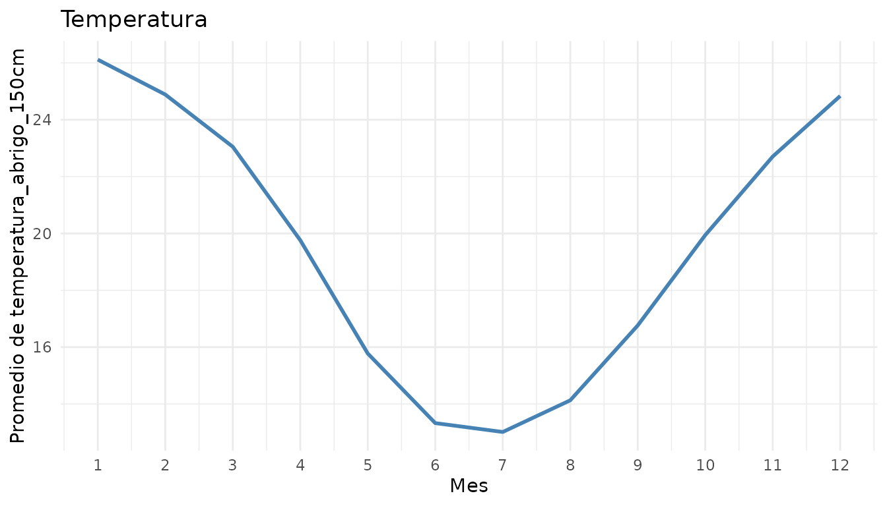
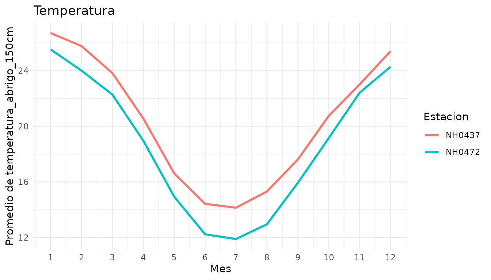
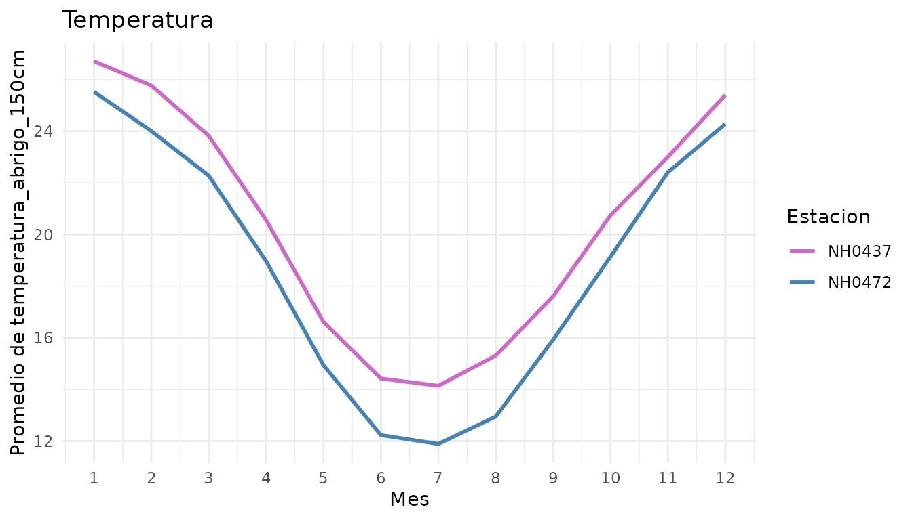
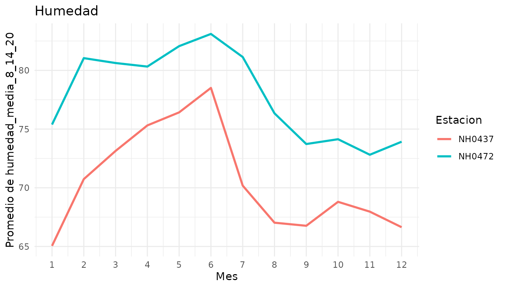
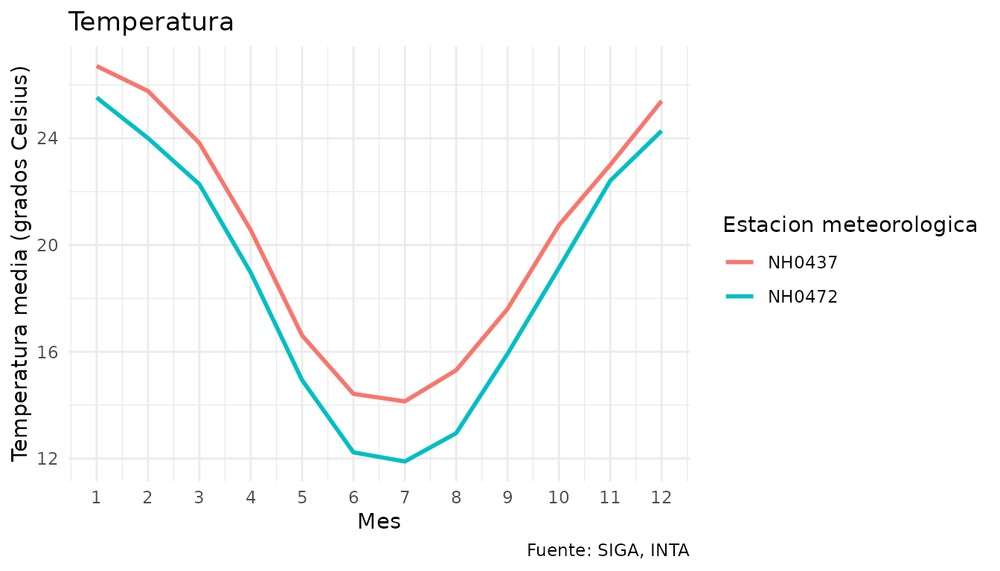
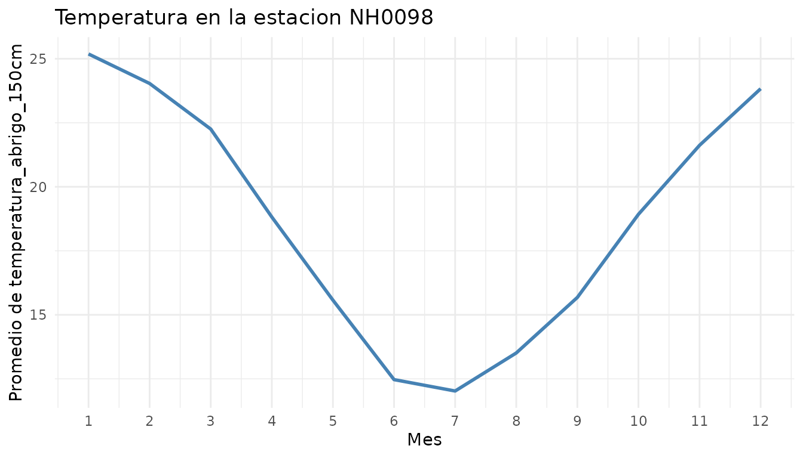

climatech es un paquete para trabajar con datos de estaciones meteorologicas. Permite descargar y leer los datos de una estacion, resumir cualquier variable numerica mes a mes y graficar su promedio mensual, tanto para una estacion como para varias a la vez.
Por defecto, el paquete trabaja con datos de estaciones del Instituto Nacional de Tecnologia Agropecuaria (INTA), disponibles en el Sistema de Informacion y Gestion Agrometeorologica (SIGA).
Esta vineta muestra el recorrido completo: explorar los datos de ejemplo, resumirlos, graficarlos y, por ultimo, descargar datos de otra estacion.
Los datos de ejemplo
El paquete incluye datos_estaciones, un conjunto de
datos con mediciones diarias de dos estaciones del INTA en la provincia
de Santa Fe, entre 2004 y 2013:
- NH0437: INTA Reconquista, en el norte de la provincia.
- NH0472: INTA Oliveros, en el sur de la provincia.
head(datos_estaciones)
#> id fecha temperatura_abrigo_150cm humedad_media_8_14_20
#> 1 NH0437 2004-01-01 19.85 65
#> 2 NH0437 2004-01-02 22.20 65
#> 3 NH0437 2004-01-03 25.20 71
#> 4 NH0437 2004-01-04 29.05 76
#> 5 NH0437 2004-01-05 28.45 68
#> 6 NH0437 2004-01-06 28.70 77Cada fila es un dia de una estacion. Ademas de id y
fecha, tiene dos variables:
temperatura_abrigo_150cm (temperatura en grados Celsius) y
humedad_media_8_14_20 (humedad relativa media del dia, en
porcentaje). Podes ver la descripcion completa con
?datos_estaciones.
Las dos estaciones tienen la misma cantidad de dias:
table(datos_estaciones$id)
#>
#> NH0437 NH0472
#> 3653 3653Resumir una variable mes a mes
tabla_resumen() calcula, para cada mes del anio, la
media, el desvio estandar, el primer cuartil, la mediana y el tercer
cuartil de una variable. Los meses se agrupan sin importar el anio: el
resumen de enero usa todos los eneros de la serie.
Por defecto resume la temperatura con todos los datos juntos:
tabla_resumen(datos_estaciones)
#> Hay 1 valor(es) faltante(s) (`NA`) en "temperatura_abrigo_150cm", que no se
#> usa(n) en los calculos.
#> # A tibble: 60 × 3
#> mes estadistico valor
#> <dbl> <chr> <dbl>
#> 1 1 media 26.1
#> 2 1 desvio 2.86
#> 3 1 q1 24.4
#> 4 1 mediana 26.2
#> 5 1 q3 28.0
#> 6 2 media 24.9
#> 7 2 desvio 3.13
#> 8 2 q1 22.9
#> 9 2 mediana 24.9
#> 10 2 q3 27.0
#> # ℹ 50 more rowsLa funcion avisa cuantos valores faltantes (NA) hay en
la variable. Esos valores no se usan en los calculos.
El resultado esta en formato largo: una fila por cada mes y estadistico. Este formato facilita filtrar un estadistico en particular o graficarlo.
Para obtener un resumen separado para cada estacion, se usa
por_estacion = TRUE:
tabla_resumen(datos_estaciones, por_estacion = TRUE)
#> Hay 1 valor(es) faltante(s) (`NA`) en "temperatura_abrigo_150cm", que no se
#> usa(n) en los calculos.
#> # A tibble: 120 × 4
#> id mes estadistico valor
#> <chr> <dbl> <chr> <dbl>
#> 1 NH0437 1 media 26.7
#> 2 NH0437 1 desvio 2.79
#> 3 NH0437 1 q1 25.0
#> 4 NH0437 1 mediana 26.8
#> 5 NH0437 1 q3 28.5
#> 6 NH0437 2 media 25.8
#> 7 NH0437 2 desvio 3.07
#> 8 NH0437 2 q1 23.8
#> 9 NH0437 2 mediana 25.6
#> 10 NH0437 2 q3 27.6
#> # ℹ 110 more rowsY para resumir otra variable, se indica su nombre en
variable:
tabla_resumen(datos_estaciones, variable = "humedad_media_8_14_20")
#> Hay 4 valor(es) faltante(s) (`NA`) en "humedad_media_8_14_20", que no se usa(n)
#> en los calculos.
#> # A tibble: 60 × 3
#> mes estadistico valor
#> <dbl> <chr> <dbl>
#> 1 1 media 70.2
#> 2 1 desvio 13.5
#> 3 1 q1 61
#> 4 1 mediana 70.5
#> 5 1 q3 80
#> 6 2 media 75.9
#> 7 2 desvio 12.0
#> 8 2 q1 68
#> 9 2 mediana 76
#> 10 2 q3 85
#> # ℹ 50 more rowsGraficar el promedio mensual
graf_prom_mensual() calcula el promedio de una variable
para cada mes y lo muestra en un grafico de lineas. Por defecto grafica
la temperatura con todos los datos juntos:
graf_prom_mensual(datos_estaciones)
#> Valores faltantes (NA) ignorados en temperatura_abrigo_150cm: 1.
Se ve el ciclo anual tipico del hemisferio sur: los meses mas calidos son diciembre, enero y febrero, y los mas frios, junio y julio.
Con por_estacion = TRUE se dibuja una linea para cada
estacion, lo que permite compararlas:
graf_prom_mensual(datos_estaciones, por_estacion = TRUE)
#> Valores faltantes (NA) ignorados en temperatura_abrigo_150cm: 1.
Reconquista (NH0437), que esta mas al norte, es mas calida que Oliveros (NH0472) durante todo el anio. La diferencia es mayor en invierno: en julio, el promedio es de unos 14 grados en Reconquista y de unos 12 en Oliveros.
Los colores de las lineas se pueden elegir con colores,
indicando uno por estacion:
graf_prom_mensual(datos_estaciones, por_estacion = TRUE,
colores = c("orchid3", "steelblue"))
#> Valores faltantes (NA) ignorados en temperatura_abrigo_150cm: 1.
Para graficar otra variable, se indica en variable. Como
el titulo por defecto es "Temperatura", conviene cambiarlo
con titulo:
graf_prom_mensual(datos_estaciones, variable = "humedad_media_8_14_20",
por_estacion = TRUE, titulo = "Humedad")
#> Valores faltantes (NA) ignorados en humedad_media_8_14_20: 4.
En este caso la relacion se invierte: Oliveros es mas humeda que Reconquista en todos los meses.
El resultado es un grafico de ggplot2, asi que se le pueden agregar
capas con +. Por ejemplo, con labs() se pueden
cambiar las etiquetas: solo se reemplazan las que se indican y el resto
queda como estaba.
library(ggplot2)
graf_prom_mensual(datos_estaciones, por_estacion = TRUE) +
labs(y = "Temperatura media (grados Celsius)",
color = "Estacion meteorologica",
caption = "Fuente: SIGA, INTA")
#> Valores faltantes (NA) ignorados en temperatura_abrigo_150cm: 1.
Usar datos de otra estacion
Para trabajar con otra estacion se usa leer_dataset().
La funcion descarga el archivo CSV de la estacion, lo guarda en la ruta
indicada y lo lee como tabla. Si el archivo ya existe en esa ruta, lo
lee directamente sin volver a descargarlo.
En este ejemplo se descargan los datos de la estacion NH0098. Se
guardan en una carpeta temporal, que se borra al cerrar R; para
conservar los datos, se puede indicar cualquier otra ruta, por ejemplo
"datos/NH0098.csv".
ruta <- file.path(tempdir(), "NH0098.csv")
nh0098 <- leer_dataset("NH0098", ruta = ruta)
#> Descargando "NH0098" desde
#> <https://raw.githubusercontent.com/rse-r/intro-programacion/main/datos/NH0098.csv>...Los datos descargados se pueden usar directamente con las demas funciones del paquete:
graf_prom_mensual(nh0098, titulo = "Temperatura en la estacion NH0098")
#> Valores faltantes (NA) ignorados en temperatura_abrigo_150cm:
#> 193.
Por defecto, leer_dataset() descarga datos de estaciones
del INTA. Con el argumento url_base se puede indicar otra
direccion, siempre que contenga archivos CSV con el nombre de cada
conjunto de datos.